Showcase Projects
Spring 2024
Carleigh Smith
Project: Hands-On 1-03
This program creates a basic form for gathering user contact information and reservation details.
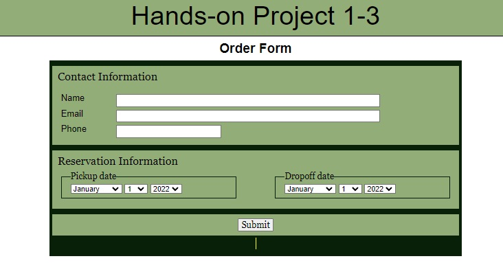Project: Hands-On 2-01
This program is a simple Fahrenheit to Celsius temperature converter. The program allows for easy conversion between the two temperature scales in a simple and interactive way.
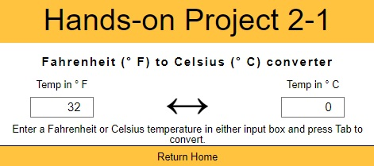Project: Hands-On 3-02
This program dynamically creates and displays a slide gallery of ISS images.
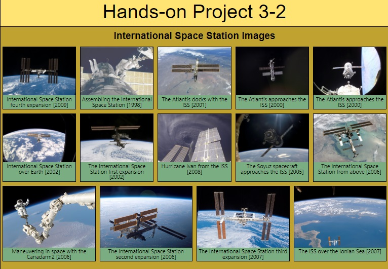Project: Hands-On 3-03
This program is a simple web application that generates a list of the top 10 movies from IMDb. The application creates an interactive list of the top 10 IMDb movies, displaying key information and links to their IMDb pages, making it easy for users to explore and learn about these movies.
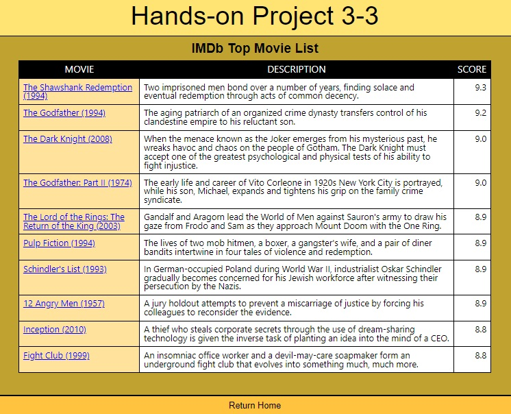Project: Hands-On 4-03
This program is a simple character counter for a book review comment. The program helps users track the number of characters in their book review comment, ensuring they stay within a specified limit and providing helpful feedback in case of overages.
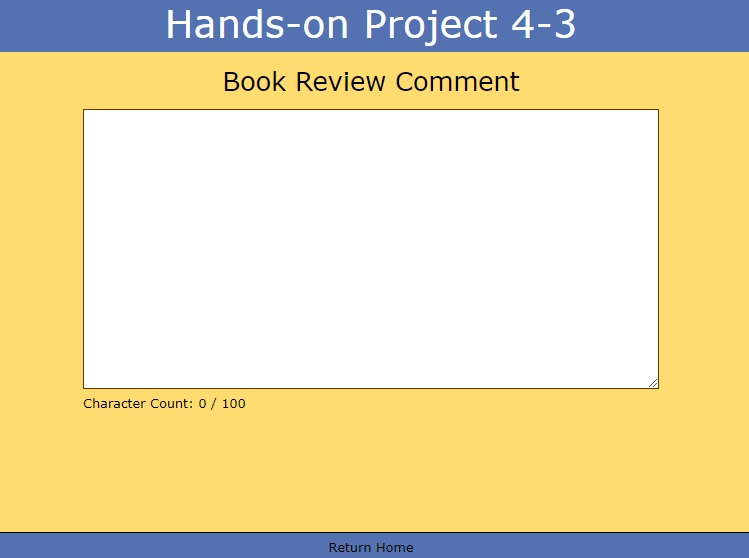Project: Hands-On 5-02
This program allows users to rank a set of photos by moving them between a "photo bucket" and a "photo list." This setup allows users to create a ranked list of their favorite photos by transferring them from one section to another.
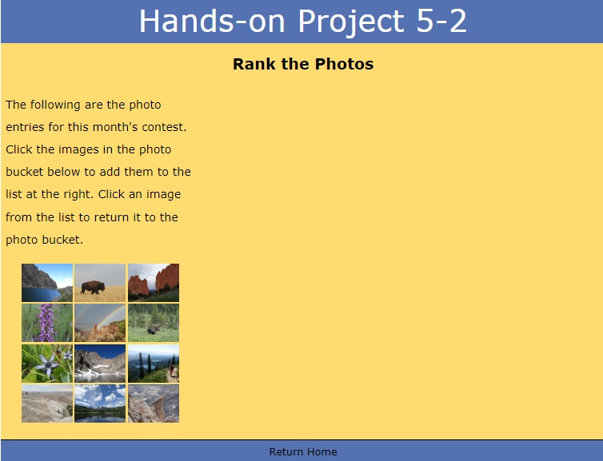Project: Hands-On 6-01
This program is designed to validate an account creation form, focusing on password security and confirmation. If there's a validation error, the browser will prevent form submission and display the corresponding custom error message. This setup ensures users create strong passwords and confirm them correctly during account creation, helping to enhance security.
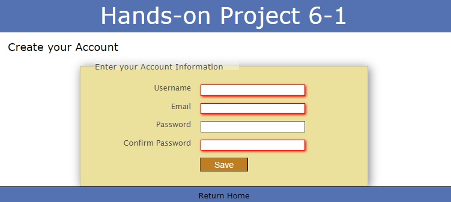Project: Hands-On 7-01
This program validates a form used for creating a new account, specifically focusing on the strength of the password. This validation mechanism helps ensure that users create strong passwords, improving the security of the account creation process.
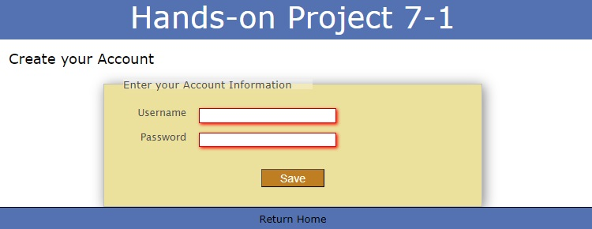Project: Hands-On 7-02
This program provides a basic poker hand simulation where users can deal cards from a shuffled deck, with an updated count of the remaining cards.
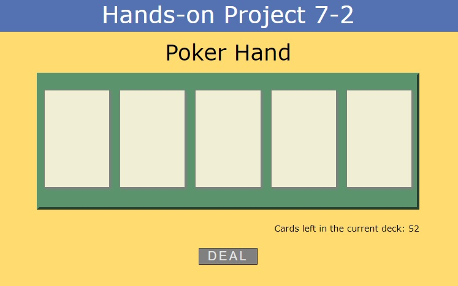Project: Hands-On 9-2
This program enables users to submit cycling-related information through an interactive form and then view a summary of the submitted data on a separate page. The session storage mechanism in JavaScript is used to temporarily retain the collected data between page transitions.
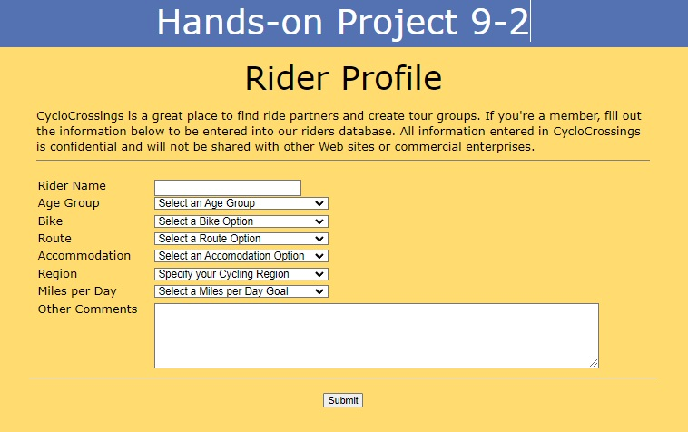Project: Chapter 9-5
This program simulates an e-commerce shopping cart system where users can add products to their cart and view the cart's contents. It comprises several components: product pages that display different items (like mitts, gloves, and other handwear), a shopping cart page, and associated JavaScript to manage cart storage. This program allows users to browse product pages, add items to a virtual shopping cart, and view the cart's contents, simulating a simple online shopping experience with persistent cart storage.
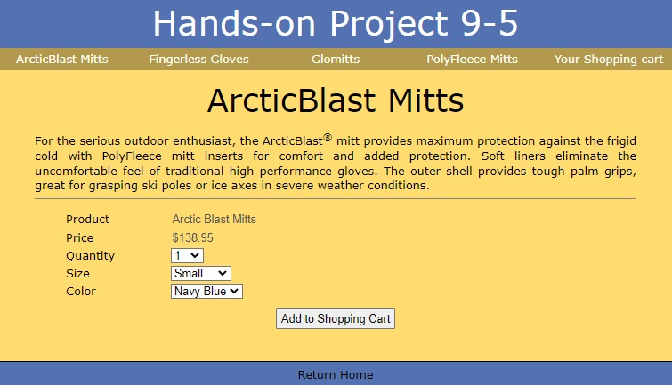Project: Chapter 12-3
This program creates an interactive recipe page with expandable and collapsible content. Overall, this program creates an interactive recipe page where users can click to reveal or hide recipe details, providing a cleaner and more user-friendly experience.
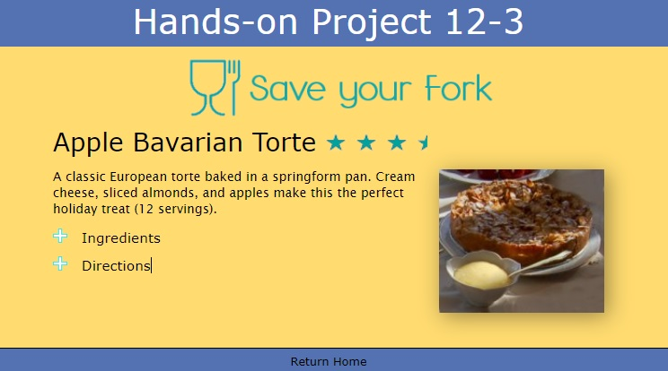